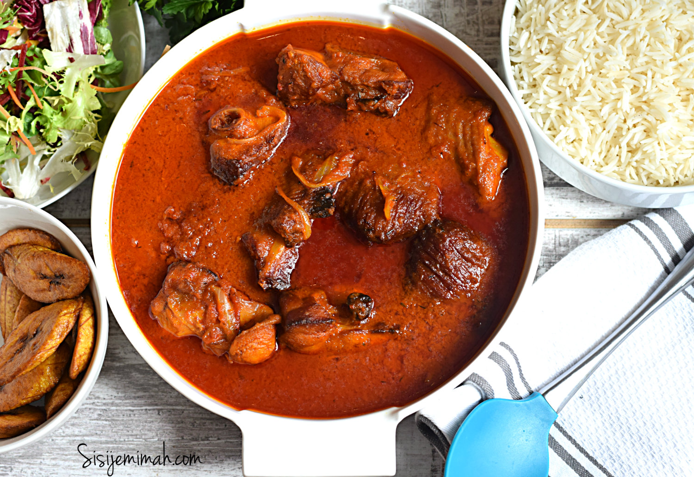

Turkey Stew

Making Turkey Stew Nigerian Style
This turkey stew is typical Nigerian styled stew. The fresh ingredients combined with the
smoked turkey makes for a delicious addition to any meal. This stew can be paired with anything from rice to broccoli.
Enjoy this tasty experience.
Ingredients
- 5 lbs of smoked turkey
- 6 fresh roma tomatoes
- 2 green bell peppers
- 4 onions
- 3 Red bell peppers
- 3 garlic cloves
- Vegetable oil
- Everything seasoning
- 2 scotch bonnet peppers
Steps
- Set aside one onion.
- Cut all other fresh vegetable ingredients in half.
- Spread vegetable oil onto a baking tray.
- Placed the halved vegetables onto the baking tray.
- Place the baking tray into an oven at 400° for 45 minutes or until roasted.
- Remove the roasted vegetables from the oven and let them cool
- Place the cooled vegetables into a blender.
- Blend the vegetables with a little bit of water until it becomes a slightly runny consistency
- Dice the onion that was set aside.
- Fry the onion in a big pot until it is caremalized.
- Place a few peices of turkey in the pot, covering the surface area of the pot on the onions.
- Let the turkey peices fry for 5 minutes.
- Add the blended stew to the pot along with the rest of the turkey.
- Add seasoning to taste.
- Let the stew cook for 30 minutes and add water as needed.
- Enjoy your stew with rice or any other side dish